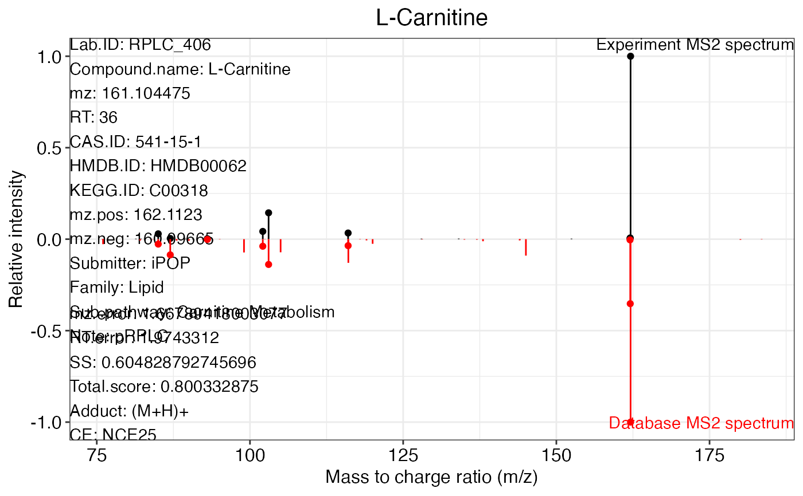

Get MS2 match plots from a metIdentifyClass object.
![[Maturing]](figures/lifecycle-maturing.svg)
ms2plot(
object,
database,
which.peak = "all",
ppm.tol = 30,
mz.ppm.thr = 400,
path = ".",
width = 20,
height = 8,
interaction.plot = FALSE,
range.mz,
range.int = c(-1, 1),
xlab = "Mass to charge ratio (m/z)",
ylab = "Relative intensity",
col.lib = "red",
col.exp = "black",
title.size = 15,
lab.size = 12,
axis.text.size = 12,
legend.title.size = 12,
legend.text.size = 10,
figure.type = c("png", "pdf"),
threads = 3,
one.folder = TRUE,
show.plot = TRUE
)Arguments
- object
A metIdentifyClass object.
- database
Used database (databaseClass).
- which.peak
Peak name(s) or "all". You can use which_has_identification functions to get what peaks have identifications.
- ppm.tol
MS2 fragment match ppm.
- mz.ppm.thr
The threshold for m/z error calculation.
- path
Work directory.
- width
The width of MS2 spectra match figure (inch).
- height
The height of MS2 spectra match figure (inch).
- interaction.plot
Output interactive plot or not.
- range.mz
m/z range for MS2 spectra match plot.
- range.int
Relative intensity range.
- xlab
Title of x axis.
- ylab
Title of y axis.
- col.lib
Colour of database MS2 spectrum.
- col.exp
Colour of experimental MS2 spectrum.
- title.size
Font size of title.
- lab.size
Font size of title of axis.
- axis.text.size
Font size of axis text.
- legend.title.size
Legend title size.
- legend.text.size
Legend text size.
- figure.type
"pdf" or "png".
- threads
The number of threads
- one.folder
Output all figure in one folder or not.
- show.plot
Show plot or just save them.
Value
A or all ms2 match plot(s).
See also
The example and demo data of this function can be found https://jaspershen.github.io/metID/articles/metID.html
Examples
data("annotate_result", package = "metID")
data("msDatabase_hilic0.0.2", package = "metID")
peak_name <- which_has_identification(annotate_result)
ms2plot(annotate_result, database = msDatabase_rplc0.0.2, which.peak = peak_name[1,1])
